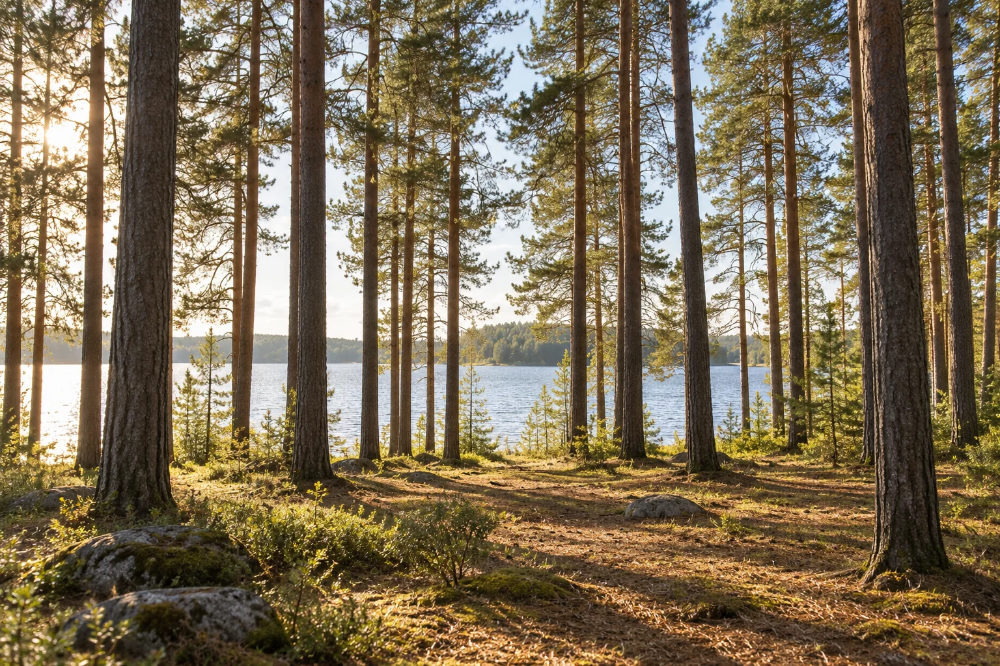
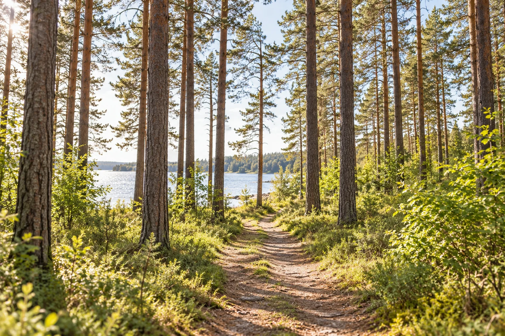

Единая территория рядом с лесом и водой

Рыбинский район · Ярославская область
Жизнь рядом с лесом и большой водой
Участки под индивидуальное жилищное строительство в месте, куда хочется возвращаться всей семьёй
Временный звук из референса — для публикации заменим записью клиента
Визуализация образа жизниДля строительства собственного жилого дома
Без посредников на стороне продавца
О проекте
«Новые Высока» — территория загородной жизни
Четыре квартала рядом с Высоковским бором объединены одной идеей: дать человеку собственное место у леса и воды, сохранив связь с Рыбинском и привычной инфраструктурой
Пройти маршрут одного дня ↓
Нажмите на маркер, чтобы сменить пейзаж
Живой маршрут
У каждого времени дня — свой пейзаж
Листайте фотографии или выберите, каким может быть ваш день за городом
1 / 4
Листайте в сторону
Фотографии показывают предполагаемый образ жизни и не являются изображением существующей инфраструктуры проекта
Локальный дизайн-пилот
Следующий шаг — выбрать удачные решения
После согласования отдельные блоки можно перенести в основную версию дизайна
Вернуться к началу